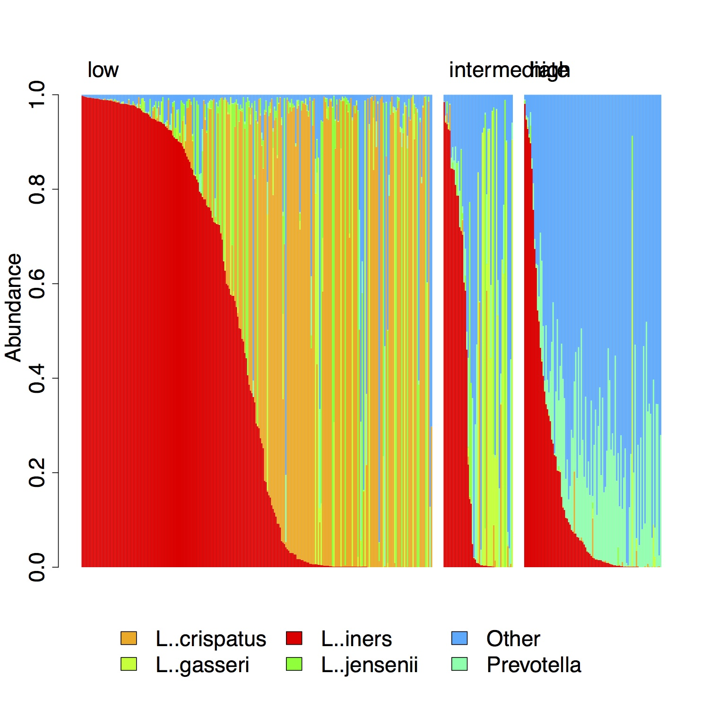

The stacked bar plot allows users to visualize the composition of each sample simultaneously. Each bar represents a single sample. The bars are subdivided into segments of length proportional to the abundance of taxa in the sample. Only the most common taxa are given a unique color. The remaining taxa are lumped into the "Other" category. Generally stacked bar plots are used to visualize relative abundance data.
Sample rearrangement can help make sample comparisons easier. Users can use sample ordering to group samples together or to arrange samples by a continuous variable such as a taxon abundance. Up to three of these orderings can be applied hierarchically, in order to group samples in different ways.
Stacked bar plots are often useful for getting a broad overview of sample composition in the dataset. For example, in the Ravel et al. dataset, a stacked bar plot can be used to show differences between samples with different Nugent scores. In this figure, the samples have been first ordered by Nugent score category and then by the abundance of L. iners. Seed automatically inserts empty columns to distinguish groups in the primary ordering.
graphics::barplot - generate barplot
graphics::legend - add legend to plot